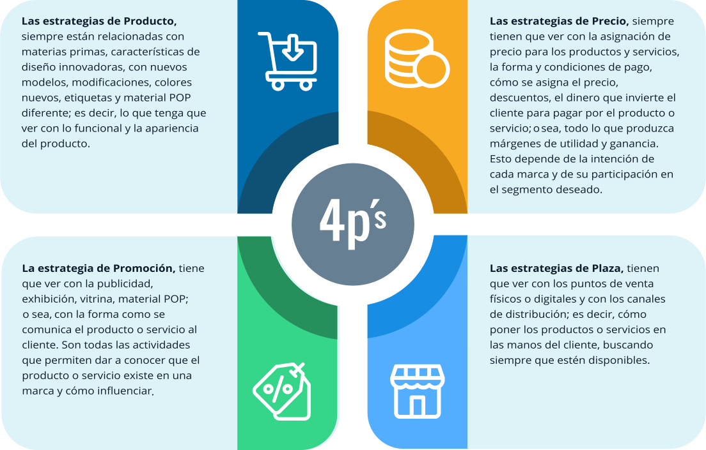

1. Investigación de la moda

La investigación de moda, desde su definición, se constituye en parte importante del proceso creativo.
Desde su comienzo como fuente de inspiración, procesando información en cada etapa y llevándola a lo relevante y necesario para realizar una colección de productos indumentarios, a través de herramientas de interpretación visual, teniendo siempre en cuenta a quién va dirigida, con información original y de primera mano, validando el proceso con preguntas y elementos clave y concretando el concepto claro, se llevará a la materialización del producto. Lo que le permite al diseñador de modas que todos los productos de la colección hablen el mismo lenguaje y se enfoquen en el concepto desarrollado.
1.1 Introducción a la investigación en el mundo de la moda, ¿Qué, por qué y para quién investigar?
(Hernández et al., 2014; Manterola & Tamara Otzen, 2013)
1.2 Indagar y elegir tema de investigación
Las ideas o iniciativas de investigación surgen de la necesidad de ahondar sobre un tema del cual no se tiene el suficiente conocimiento o se desea ampliar su nivel de profundidad. Al elegir el tema se debe indagar un poco sobre:
En fin, todo ayuda a hacerse una idea al respecto del tema antes de adentrarse en el proceso de investigación. Una vez se tiene claro qué investigar se procede a buscar en las fuentes de información.
(Hernández et al., 2014; Manterola & Tamara Otzen, 2013)
1.3 Fuentes de información e investigación: introducción a las macrotendencias y microtendencias, fuentes de inspiración
Adaptado de: Fradera, s.f.; Roselló. s.f.; Seivewright. 2013; Silvestrini & Vargas. 2008.
Revise este material para la profundización del tema.
1.4 Metodologías para la gestión de la información: coolhunting y cooltsearching, Bloggers y trendsetters, comunidades o grupos de consumo, herramientas para cazar tendencias
En la investigación de moda se pueden encontrar diferentes roles y con ellos sus funciones.
(Coolhunting, cazadores de tendencias, s.f.; Estaún, 2018; Fernández, 2017; López, s.f.; Skotnicka, 2013; Wikipedia, s.f.-a)
En los documentos adjuntos encontrará información que le permitirá explorar un poco más el rol de quienes se han destacado como prescriptores de moda.
1.5 Recopilación y análisis de datos: cuaderno de bocetos, técnicas de dibujo, el collage, yuxtaposición deconstrucción, referencias cruzadas, análisis de la investigación, centrarse en elementos claves (moodboards, storyboards, concepbook)
En la tarea de obtener información de las fuentes de inspiración y de las metodologías utilizadas, ya se puede iniciar a validar y analizar los contenidos para lograr identificar puntos de valor. En esta fase del proceso se obtienen conclusiones y a veces se podrán encontrar ciertas dificultades o por el contrario decidir acciones a implementar.
Para llevar a cabo la búsqueda de información se emplean técnicas como el análisis de datos cualitativos y cuantitativos. El primero se centra en las opiniones, actitudes y creencias y en preguntas y respuestas como:
y el segundo en los datos duros e información que pueda contabilizarse, obtenido mediante preguntas similares a:
Para reunir la información y construir el concepto de la colección, el diseñador se vale de diferentes herramientas, siempre centrándose en los elementos clave de la investigación, según su experiencia o preferencia utiliza:
------------Interactivo--------------------------
Adaptado de Definicion.de, s.f.-b; Hernández, Fernández & Baptista, 2014; Melo, 2018; QuestionPro, s.f.-a; Seivewright, 2013.
1.6 Estructura y forma de la colección: interpretación del concepto de la colección, cartas de color, formas, texturas, materiales, siluetas, procesos y acabados)
Luego de tener el concepto claro, este se deberá traducir en productos, para lo cual se realiza una estructura previa de la colección, identificando los tipos de productos y cómo se interrelacionan entre sí, con el fin de darle forma a la colección y mantener un hilo conductor, el cual se logra mediante una estrecha relación con el concepto, teniendo en cuenta o formulando las cartas de color, formas, texturas, materiales, siluetas, procesos y acabados, que se harán tangibles en el producto final. Es decir, cada uno de los productos de la colección corresponderá al concepto desarrollado y entre todos hablarán el mismo lenguaje.
Para el desarrollo de los productos algunos diseñadores recurren al prototipado sobre maniquí, también conocido como drapeado (en inglés Draping), otros al dibujo o a técnicas de sobreposición de imágenes (técnicas vistas en el tema anterior).
Adaptado de Castillo. s.f.; Corona. 2010; ESME Escuela de moda y empresa. s.f.; Seivewright. 2013; Tutoriales con la Miss. 2018
Por medio de la consulta del siguiente material será posible ampliar los conocimientos de este tema.
1.7 Comunicación de las ideas: dibujo aplicado al diseño, plantillas, ilustraciones, collage, dibujo de prototipo, composición, tablero de dibujo
Llegó la hora de plasmar los conceptos a través de la comunicación creativa, moldeando de forma gráfica todo aquello que se encontró en la investigación.
El concepto de comunicación proviene del prefijo “com” de compartir algo con otros; entonces, donde su verdadero sentido está en la intención de enviar mensajes para estimular una respuesta en la demás y dicha respuesta es la que permitirá saber que se fue comprendido por los demás.
La palabra expresión proviene del término latino expressus es manifestar los pensamientos y las impresiones de nuestra realidad por medio de la palabra, gestos o actitudes”; “es la representación, a través de símbolos e imágenes de una manifestación de nuestra propia individualidad, y puede estar dirigida o no a otro sujeto” (Hiebaum, 2017).
Todos los signos, símbolos y medios por los cuales transmitimos significados y valores a otros seres humanos, constituyen lo que llamamos formas de expresión (Paoli. 1985; pág. 67).

El dibujo es una de las principales herramientas para la comunicación de ideas y de expresión gráfica, acercado en todas sus técnicas a la realidad y a la forma del producto. Este se realiza en forma de boceto o croquis a mano alzada y en algunos casos se obtiene de un software o programa de diseño para tal fin.
Las plantillas son dibujos o ilustraciones prediseñadas sobre las cuales, los diseñadores plasman sus ideas originales, lo que las convierte en una importante ayuda. En el software o programa de diseño la plantilla cumple la función de edición avanzada, lo cual permite lograr un sinnúmero de elementos.
A las plantillas se les complementa con el dibujo del prototipo que es un acercamiento más a la realidad, pero limitada del producto y donde se permite validar una y otra vez hasta su aprobación final.
Luego de usar plantillas y de tener el dibujo prototipo se pasa a la ilustración técnica, en la que se representan gráficamente las prendas con detalles exactos, logrando con sus técnicas la realidad necesaria para entenderlas y llevarlas a cabo.
Al igual que para el proceso investigativo, para el de comunicación algunos diseñadores acuden al collage como técnica de expresión.
Al final del proceso investigativo se encuentra el tablero de dibujo llamado trends board (paneles de tendencias o de indumentaria), una de las herramientas fundamentales de un investigador de moda. Ayuda a interpretar y delimitar todo aquello que se convertirá en tendencia. En él se plasma, de manera gráfica, concreta y clara: la colección, imágenes conceptuales, referentes de la fuente de inspiración, el concepto que comunica la tendencia y los elementos de diseño que se desprenden de ella como la imagen de usuario actual y el aspiracional, la morfología (silueta), texturas visuales y táctiles, paleta de color y su proporción de uso sugerida, sistemas de acceso y cierre de los productos, prenda fetiche o must y los complementos de moda que completarán los atuendos.
Adaptado de Cámara Industrial Argentina de la Indumentaria (CIAI). s.f.-a, s.f.-b; Emprende a conciencia, s.f.; Escuela Superior de Diseño de Barcelona, 2018a, 2018b; GonzáLez, s.f.; Hiebaum, 2017; Ras, 2015.
2. El mercado y sus segmentos
El mercado es un ente de relación que pone en contacto personas o marcas que ofrecen productos o servicios con otras que los necesitan o quieren, por medio de una transacción. Estos mercados, tradicionalmente han sido físicos y la relación se ha dado frente a frente, pero hoy en día, también son digitales, y se han incrementado por el desarrollo tecnológico, las posibilidades que brindan las TIC, los canales de comunicación y las circunstancias actuales de globalización que obligan a reinventar los métodos, migrando a la comercialización a través de internet y medios digitales.
Cuando hablamos de mercadeo se analizan y estudian las necesidades o gustos de un público, para crearlas o satisfacerlas en un segmento del mercado específico; en éste intervienen varios elementos, siendo uno de los principales el análisis del entorno en el cual se va a comercializar, teniendo en cuenta factores culturales, sociales, económicos y geográficos que determinan muchas de las características del producto a ofrecer.
En este análisis, es primordial el conocimiento del usuario al cual está dirigido el producto, donde se tienen en cuenta tanto las características físicas, comportamentales y actitudinales que son las que complementan y definen sus gustos y preferencias, elementos fundamentales para desarrollar o proponer nuevas ideas. Los canales de distribución, puntos de venta y escaparatismo, hacen parte de este análisis de mercadeo.
Investigar las circunstancias en que se dan los cambios, es la función más importante del mercadeo, es la oportunidad que tienen las marcas de hacer cosas nuevas para dar solución a problemas de calidad de vida, a través de productos, sistemas, experiencias y servicios, conquistando nuevos mercados que generen oportunidades para las regiones y el país… ¡adiós costumbres, hola nuevos hábitos!
2.1 Fundamentos de mercadeo: definición de consumidor, usuario, cliente, competencia, mix de mercado, mercado objetivo
Los fundamentos del mercadeo abarcan varios aspectos que tienen que ver directamente con el consumidor, la competencia y el mercado objetivo; estos permiten identificar conceptos esenciales para establecer estrategias, con que las marcas puedan lograr objetivos de comercialización de productos diferenciados, dirigidos a un grupo de consumidores, usuarios o clientes ya analizado e identificado.
Los esfuerzos de las marcas se concentran en conquistar al consumidor, que puede ser una persona u organización que demanda productos, bienes o servicios, que le satisfagan sus necesidades o gustos, pagando por ellos y que son creados para su consumo.
El usuario, que es quien utiliza el producto, bien o servicio de una marca específica; es decir, aquel que efectivamente usa el producto que la marca crea, siendo un potencial cliente o consumidor; valida la marca. Es un ente de comunicación por excelencia porque la utiliza, le gusta, la exhibe, experimenta con ella, muestra su favorabilidad y la publicita.
El cliente es fundamental para la empresa, porque es quien genera una transacción comercial con ella; es decir, es el que compra el producto, bien o servicio, ya sea para consumirlo o para que lo utilice otra persona. Por lo anterior, la estrategia de marketing se debe centrar, desarrollar e implementar en función del cliente, entablando una dinámica efectiva de comunicación constante para conocerlo, consentirlo, conquistarlo, hasta volverlo en fans de la marca.
La competencia es el conjunto de marcas que ofrecen productos, bienes o servicios que son de la misma naturaleza, con características diferenciadoras que pueden cubrir las mismas necesidades de un público objetivo.
Consumidor, cliente y usuario siempre están presentes en un segmento del mercado específico, les corresponde a las marcas investigar la competencia, para generar nuevos, diferentes o mejorados productos, bienes y servicios. Darle importancia a la competencia es fundamental para la permanecer en el mercado y hacerlo dentro del marco del libre comercio y las regulaciones existentes en cada país, lo cual genera equilibrio en la cadena productiva.
El marketing mix es una estrategia que tiene cuatro variables principales del negocio: Producto, Precio, Plaza y Promoción, que se articulan o mezclan de una manera particular para lograr los objetivos de mercadeo que persigue la empresa, de acuerdo al público objetivo, esto hace parte del ADN de la empresa.
2.2 Segmentos de mercado, nichos de mercado

La hora más oscura es justo antes del amanecer

Aforismo chino
La segmentación del mercado es un método de investigación de mercadeo, en el que se divide a los clientes en diferentes grupos o segmentos, consumidores que tienen características homogéneas significativas para el propósito de mercadeo de las marcas, esto hace que sean mucho más efectivas y tengan mayor impacto en los grupos seleccionados. Se investiga el segmento para comercializar de una mejor manera los productos que ya se tienen o los que se van a crear.
El nicho de mercado
El nicho de mercado es una parte más pequeña y especializada de un segmento de un mercado, que es poco o nada atendido en cuanto a sus necesidades.
Un nicho del mercado viene de una segmentación específica, es una especialización del segmento. En el nicho, los usuarios tienen gustos, necesidades y características muy específicas y comunes entre ellos, esto es lo que todas las marcas quieren conocer, para generar oportunidad de negocio. Pueden llegar a ser tan especializados que las marcas trabajan para ellos y por el contrario, si no se conocen, no hay comercialización, oportunidad de crecimiento y negocios.
Conocer el nicho de mercado es clave para toda marca que quiera impactar con su producto o servicio.
2.3 Segmentos emergentes
Los nuevos desafíos que traen los estudios de mercados tienen que ver con el desarrollo y expansión de nuevos sistemas de vida de algunos grupos sociales y la satisfacción de sus necesidades y requerimientos; dentro de estos están algunos muy marcados y definitivamente importantes para los nuevos sistemas de comunicación de mercadeo y comercialización.
Mercados emergentes: son sectores geográficamente establecidos y determinados, donde se percibe un desarrollo económico en crecimiento y es posible tener diferentes y novedosos productos y servicios para su consumo local. En los mercados emergentes las marcas y la competencia se encuentran en iguales condiciones de impacto, todos tienen la misma posibilidad de entrar y participar en él, porque este aún no tiene manejos previos de consumo ni condiciones de comercialización; son realmente una gran posibilidad de penetración y crecimiento económico para las empresas, algunos mercados emergentes en la actualidad pueden ser China, India, Rusia y otras regiones en el mundo, incluyendo Colombia.
Segmentos emergentes: se definen como grupos de personas que experimentan cambios en su estilo de vida obteniendo nuevas experiencias, productos y servicios de una categoría diferenciada y especial. Todos estos sujetos están dentro de un segmento del mercado que está fortalecido y en proyección al crecimiento. Algunos de los segmentos emergentes a tener en cuenta son:
2.4 El cliente: estilos, necesidades, características
Yo visto a todo el mundo, estudiantes y grandes estrellas. El usuario final es lo que hago y lo que soy.
John Rocha (Posner, 2015, pág, 107)
Cliente, es la persona que compra habitualmente en la misma marca, empresa o proveedor productos o servicios que le satisfacen gustos o necesidades.
Las marcas realizan estudios que les permiten tener la información necesaria respecto a las características que giran alrededor de su cliente, las cuales son definitivas en el momento de continuar o generar nuevos productos o servicios; el entorno cambia de acuerdo al espíritu del momento, marcando las pautas dictatorias que clasifican, definen y establecen las reglas o estilos de vida, acompañados de nuevos requerimientos donde el mercado interviene con productos mejorados, nuevos y novedosos.
Tipos de clientes
Los clientes no siempre tienen un mismo patrón de comportamiento, este cambia dependiendo del momento y las circunstancias en que se encuentre. Un cliente puede ser racional, reservado, indeciso, dominante, hablador, impaciente, son tipologías de clientes, de su personalidad depende la venta.
Conocer el estilo de cliente facilita el cierre de un negocio, los estilos más reconocidos son: analítico, controlador, facilitador y promotor.
Gestión del mercadeo
El análisis de las variables anteriores es lo que se llama gestión del mercadeo, que hace para posicionar productos y servicios al precio adecuado, en el lugar preciso y con la promoción correcta para el mercado específico.
2.5 Estrategias de mercadeo, 4p´s del mercado
Las estrategias de mercadeo
La estrategia de mercadeo es una metodología que incluye las acciones que estudia una marca para conseguir los objetivos planeados en el mercadeo, para lograr el éxito esperado y posicionar de manera adecuada un producto de tal forma que pueda ser: lanzado, reconocido, comprado y recomendado. Se crea una imagen de recordación y reconocimiento que hace que los clientes se conviertan en fans de la marca, le sean fiel y la recompren.
Las 4p´s del mercadeo
Las estrategias de mercadeo están compuestas por 4p´s, que son sus elementos fundamentales: Producto, Precio, Plaza y Promoción, todos se integran como si fuera una “receta de cocina”, cada uno tiene un lugar importante dentro de la planeación de la estrategia, pero también cada uno de ellos puede generar sus propias acciones en una combinación especifica según los alcances del plan de mercadeo de la marca.
Con cada una de las 4p´s, las marcas pueden generar sus propias estrategias de mercadeo, por ejemplo:
¿Cuál de estas se utiliza?, depende de la marca, producto, precio, región, temporada del año, en fin… lo importante es ¡Que funcione!
Glosario
Análisis:1. m. Distinción y separación de las partes de algo para conocer su composición. 2. m. Estudio detallado de algo, especialmente de una obra o de un escrito. (Real Academia Española, s.f.).
Consiste en identificar los componentes de un todo, separarlos y examinarlos para lograr acceder a sus principios más elementales. (Definicion.de, s.f.-a).
Análisis cualitativo:1. m. Quím. Análisis que tiene por objeto identificar los componentes de una sustancia. (Real Academia Española, s.f.).
Análisis cuantitativo:1. m. Quím. Análisis que se emplea para determinar la cantidad de cada elemento o ingrediente en una sustancia. (Real Academia Española, s.f.).
Canales:se denomina canal de distribución al camino seguido en el proceso de comercialización de un producto desde el fabricante hasta el usuario industrial o consumidor final.
Cliente:un cliente (del Latín cliens, -entis) es la persona o empresa receptora de un bien, servicio, producto o idea, a cambio de dinero u otro artículo de valor.
Colección:1.f. Conjunto ordenado de cosas, por lo común de una misma clase y reunidas por su especial interés o valor. Colección de escritos, de medallas, de mapas.
4. f. Conjunto de las creaciones que presenta un diseñador de moda para una temporada. Colección primavera-verano. (Real Academia Española, s.f.).
Comportamiento:es el estudio del comportamiento que los consumidores muestran al buscar, comprar, utilizar, evaluar y desechar los productos y servicios que, consideran, satisfarán sus necesidades. Se enfoca en la forma que los individuos toman decisiones para gastar sus recursos disponibles (tiempo, dinero y esfuerzo) en artículos relacionados con el consumo.
Comunicación:2. f. Trato, correspondencia entre dos o más personas.
3. f. Transmisión de señales mediante un código común al emisor y al receptor. (Real Academia Española, s.f.).
“Compartir algo, poner en común”. Por lo tanto, la comunicación es un fenómeno inherente a la relación que los seres vivos mantienen cuando se encuentran en grupo. A través de la comunicación, las personas o animales obtienen información respecto a su entorno y pueden compartirla con el resto. (Definicion.de, s.f.).
Consumidor:en economía, un consumidor es una persona u organización que demanda bienes o servicios a cambio de dinero proporcionados por el productor o el proveedor de bienes o servicios. Es decir, es un agente económico con una serie de necesidades. También se define como aquel que consume o compra productos para el consumo; es por tanto el actor final de diversas transacciones productivas.
Distribución :es aquel conjunto de actividades, que se realizan desde que el producto ha sido elaborado por el fabricante hasta que ha sido comprado. La distribución de productos de marca, puede llegar a una relación ruin e insana entre proveedor y distribuidor pudiendo generar controversia dentro de la empresa, que tiene por objeto precisamente hacer llegar el producto (bien o servicio) hasta el consumidor, de cualquier forma a cualquier precio y desprestigiando la marca que representa en la mayoría de los casos pudiendo incluso interponerse entre el fabricante y consumidor final.
Emergentes:emergente puede referirse a:
- Emergente, un sistema cuyas propiedades o procesos no son reducibles a las de sus partes constituyentes.
- País emergente, aquel cuya economía aún no alcanza el estatus de desarrollada, pero ha avanzado más que sus competidores del mundo en desarrollo.
- Economía emergente, un término macroeconómico.
- Compañía emergente, negocio de limitada historia y grandes posibilidades de crecimiento.
Escaparatismo:desarrollado por los escaparatistas, como conjunto de técnicas aplicadas al diseño y montaje de vitrinas y escaparates.
Esencia:es aquello invariable y permanente que constituye la naturaleza de las cosas. El término proviene del latín essentia, que a su vez deriva de un concepto griego. Se trata de una noción que hace referencia a lo característico y más importante de una cosa. (Definicion.de, s.f.).
Estilismo:2. m. En el mundo de la moda y de la decoración especialmente, actividad profesional que se ocupa del estilo y de la imagen. (Real Academia Española, s.f.).
Estrategia:es el elemento que define y encuadra las líneas maestras de comunicación y comercialización de la empresa, para aprovechar las oportunidades del mercado.
Expresión:2. f. Especificación, declaración de algo para darlo a entender. (Real Academia Española, s.f.).
Del latín expressio, una expresión es una declaración de algo para darlo a entender. Puede tratarse de una locución, un gesto o un movimiento corporal. La expresión permite exteriorizar sentimientos o ideas: cuando el acto de expresar trasciende la intimidad del sujeto, se convierte en un mensaje que el emisor transmite a un receptor. (Definicion.de, s.f.)
Fuente de inspiración:7. f. Principio, fundamento u origen de algo.
8. f. Persona o cosa que proporciona información. (Real Academia Española, s.f.).
d (=raíz) material, obra o autor que provee información. (Diccionario.reverso.net).
Hábitos:es la acción y efecto de consumir o gastar, sean productos, bienes o servicios, como por ejemplo la energía, entendiendo por consumir, como el hecho de utilizar estos productos y servicios para satisfacer necesidades primarias y secundarias.
Indagar:1.tr. Intentar averiguar algo discurriendo o con preguntas. (Real Academia Española, s.f.).
Verbo que procede de la lengua latina (indagāre). El término se utiliza para nombrar a la intención de conocer algo a través de una investigación o mediante preguntas. (Definicion.de, s.f.).
Individualidad:1. f. Cualidad particular de alguien o algo, por la cual se da a conocer o se señala singularmente. (Real Academia Española, s.f.).
Innovación:2. f. Creación o modificación de un producto, y su introducción en un mercado. (Real Academia Española, s.f.).
Inspiración:del latín inspiratĭo, la inspiración es el proceso o el resultado de inspirarse o inspirar (hacer que el aire del exterior ingrese a los pulmones, impulsar pensamientos en la mente). Hace referencia a la iluminación que una divinidad o una fuerza sobrenatural aporta a una persona. La inspiración está vinculada al estímulo espontáneo que surge en el interior de un artista o creativo. La inspiración no aparece por esfuerzo o voluntad; por lo tanto, se diferencia del trabajo o del entrenamiento. (Definicion.de, s.f.).
Investigación:1.f. Investigación que tiene por fin ampliar el conocimiento científico, sin perseguir, en principio, ninguna aplicación práctica. (Real Academia Española, s.f.).
(vocablo que tiene su origen en el latín investigare), este verbo se refiere al acto de llevar a cabo estrategias para descubrir algo. También permite hacer mención al conjunto de actividades de índole intelectual y experimental de carácter sistemático, con la intención de incrementar los conocimientos sobre un determinado asunto. (Definicion.de, s.f.).
Macrotendencia:cuando una tendencia es adoptada por un colectivo muy reducido. O dura un poco más que una moda. (Roselló, s.f.).
Mentalidades:este término se ha usado desde principios del siglo XX para la representación de la cultura y estructuras sociales que los individuos de una determinada sociedad tienen sobre el mundo social. Su estudio parte de la historiografía moderna ha sido llamado también historia de la sensibilidad y abarca todas las expresiones de vida cotidiana como complemento del estudio de la macro-historia.
Mercadeo:acción de mercadear. Conjunto de operaciones por las que ha de pasar una mercancía del productor al consumidor.
Mercado:en economía, un mercado es un conjunto de transacciones de procesos o intercambio de bienes o servicios entre individuos.
Metodología:1. f. Ciencia del método.
2. f. Conjunto de métodos que se siguen en una investigación científica o en una exposición doctrinal. (Real Academia Española, s.f.).
Vocablo generado a partir de tres palabras de origen griego:metà (“más allá”), odòs (“camino”) y logos (“estudio”). El concepto hace referencia al plan de investigación que permite cumplir ciertos objetivos en el marco de una ciencia. (Definicion.de, s.f.)
Microtendencia:lleva poco tiempo de existencia (unas pocas semanas o meses) como para confirmar que es eso, una tendencia pequeña sin más. (Roselló, s.f.)
Mix de mercadeo:se denomina mezcla de mercadotecnia o mix comercial (conocido en el mundo como marketing mix) a las herramientas o variables de las que dispone el responsable de la mercadotecnia para cumplir con los objetivos de la compañía. Son las estrategias de marketing, o esfuerzo de mercadotecnia y deben incluirse en el plan de marketing (plan 0c). La empresa usa esta estrategia cuando busca acaparar mayor clientela. Y por eso se lo considera importante. Como la rama más esencial.
Nicho de mercado:es un término de mercadotecnia utilizado para referirse a una porción de un segmento de mercado en la que los individuos poseen características y necesidades homogéneas, y estas últimas no están del todo cubiertas por la oferta general del mercado.
Plantilla:una plantilla o dispositivo de interfaz, suele proporcionar una separación entre la forma o estructura y el contenido. Es un medio o aparato o sistema, que permite guiar, portar, o construir, un diseño o esquema predefinido.
Una plantilla agiliza el trabajo de reproducción o de muchas copias idénticas o casi idénticas (que no tiene que ser tan elaborado, sofisticado o personal). Si se utilizan plantillas en todos los terrenos de la industria y la tecnología. Una plantilla puede servir como muestra base de una diversidad sobre la que comparten elementos comunes (patrón) y que en sí es lo que constituye la plantilla.
En relación con la edición o composición de textos o imágenes, se compone de cajas y líneas, con unos tamaños y márgenes, para facilitar la escritura de artículos o cartas, con títulos, fotos y diagramas. (Wikipedia, s.f.-b)
Proceso creativo:se refiere a las fases que se deben seguir para la aplicación de la creatividad y la generación de ideas entorno a un reto o un problema a resolver. (Fandom, s.f.)
Segmento de mercado:como su propio nombre indica, se trata de identificar segmentos de [Mercado (Marketing)(mercado)] o grupos uniformes más pequeños, pues la segmentación de un mercado en muchos mercados se puede asociar, de acuerdo a sus características o variables que puedan influir en su comportamiento de compra.
Tema:9. m. Ling. Parte de un enunciado que presenta cierta información como conocida, por oposición al rema. (Real Academia Española, s.f.).
Es la cuestión que capta la atención de los científicos al realizar un trabajo de campo. (Definicion.de, s.f.)
Transacción:una transacción financiera es un acuerdo, comunicación o movimiento llevado a cabo entre un comprador y un vendedor en la que se intercambian un activo contra un pago. Implica un cambio en el estatus en las finanzas de dos o más negocios o individuos. El comprador y el vendedor son entidades u objetos separados, que generalmente intercambian productos de valor, como información, bienes, servicios o dinero. Seguiría siendo una transacción el intercambio de bienes en un momento dado y del dinero en otro diferente. Este tipo de operación se conoce como una transacción de dos partes, siendo la primera parte la entrega de dinero y la parte segunda la recepción de bienes.
Usuario:persona que usa habitualmente un servicio. "Los usuarios de los transportes públicos".
Material complementario
| Nombre del documento o material | Tipo de material | Enlace del recurso |
|---|---|---|
| Manterola & Tamara Otzen, (2013) Por qué investigar y cómo conducir una investigación. | Ver | |
| Durazo, (2018), La macrotendencia, uso y función dentro de una empresa de moda. | Ver | |
| López, (s.f.), Taller de Coolhunting. | Web | Ver |
| Skotnicka, (2013), Coolhunting, o cómo entender y cazar las tendencias. | Web | Ver |
| Comunicaciones Oui-we, (2014), Teoría de diseño de paneles para indumentaria 2014. | Web | Ver |
| Zapata, O, (2005), ¿Cómo encontrar un tema y construir un problema de investigación? | Ver | |
| Iglesias, J, (2015). El papel de las marcas de moda en la construcción de la identidad personal. | Ver | |
| Silvestrini, M.,(2008), Fuentes de información primarias, secundarias y terciarias. | Ver | |
| (s.f.), El storyboard o guion gráfico. | Ver |
Referencias bibliográficas
Anna&Co. (2019, 28 de mayo). ¿Qué-es-un moodboard de que sirve como se hace? | Anna&Co. Anna&Co.https://annaand.co/post/que-es-un-moodboard-de-que-sirve-como-se-hace
Arteneo. (2016, 13 de diciembre). El cuaderno de bocetos de los grandes artistas | Arteneo. Arteneo.Com.https://www.arteneo.com/blog/el-cuaderno-de-bocetos-de-grandes-artistas/
Blog de DSIGNO. (2017, 9 de mayo). El moodboard: qué es y para qué sirve. Dsigno.Es.https://www.dsigno.es/blog/diseno-de-moda/moodboard-que-es-y-para-que-sirve
Castaño, P. (s.f.). Paneles de indumentaria - Pinterest.https://ar.pinterest.com/castapablo/paneles-de-indumentaria/
Castillo, P. (s.f.). Bases para diseñar una colección de moda: Guía completa con imágenes y ejemplos. Fashion & Illustration.https://fashionandillustration.com/bases-para-disenar-una-coleccion-de-moda/
Céspedes Sáenz, A. (2010). Principios de mercadeo (5a. ed.). Ecoe Ediciones.https://elibro-net.bdigital.sena.edu.co/es/ereader/senavirtual/69059?page=76
CEIPA. (2011). Fundamentos de Mercadeo.
CEIPA. (2011). Fundamentos de Mercadeo. CIAI Cámara Industrial Argentina de la Indumentaria. (s.f.-a). La Ilustración de Moda. Ciaindumentaria.Com.Ar.http://www.ciaindumentaria.com.ar/plataforma/la-ilustracion-de-moda/
CIAI Cámara Industrial Argentina de la Indumentaria. (s.f.-b). Paneles de tendencia. Ciaindumentaria.Com.Ar.http://www.ciaindumentaria.com.ar/plataforma/paneles-de-tendencia/
Comunicaciones Oui-we. (2014, 17 de mayo). Teoría de diseño de paneles para indumentaria 2014. SlideShare.https://es.slideshare.net/comunionesouiwe/teorica-de-diseode-paneles-para-indumentaria-2014
Coolhunting, cazadores de tendencias. (s.f.). Tribuna Salamanca.https://www.tribunasalamanca.com/blogs/campamento-marketing/posts/coolhunting-cazadores-de-tendencias
Corona, C. (2010). Desarrollo de colecciones de moda en la industria textil [Centro Superior de Diseño de Moda de Madrid].https://issuu.com/corona_baos/docs/thesis
Definicion.de. (s.f.-a). Definicion.de sastre.https://definicion.de/sastre/
Definicion.de. (s.f.-b). Definición de recolección de datos - Qué es, Significado y Concepto.https://definicion.de/recoleccion-de-datos/
Durazo, B. (2018). La macrotendencia, uso y función dentro de una empresa de moda. Artículos Técnicos APTT Perú, 40–42.http://apttperu.com/la-macrotendencia-uso-y-funcion-dentro-de-una-empresa-de-moda/
El nuevo Empresario. (2020). Nicho de Mercado. ¿Cómo encontrarlo?https://elnuevoempresario.com/nicho-de-mercado-como-encontrarlo#gs.cnt6n6
Emprende a conciencia. (s.f.). Diseño de Prototipo — Emprende A Conciencia. Emprende a Conciencia.https://www.emprendeaconciencia.com/diseno-prototipo
Escuela Superior de Diseño de Barcelona. (2018a, 22 de junio). 5 técnicas de dibujo que han marcado tendencia en el diseño | ESDESIGN. ESDESIG.https://www.esdesignbarcelona.com/int/expertos-diseno/5-tecnicas-de-dibujo-que-han-marcado-tendencia-en-el-diseno
Escuela Superior de Diseño de Barcelona. (2018b, 20 de octubre). ¿Qué es el diseño creativo y como adquirir buenas ideas? | ESDESIGN. ESDESING.https://www.esdesignbarcelona.com/int/expertos-diseno/que-es-el-diseno-creativo-y-como-adquirir-buenas-ideas
ESIC Business Marketing School. (2018). La investigación y análisis de tendencias como nueva aliada en la estrategia. ESIC.https://www.esic.edu/rethink/management/la-investigacion-analisis-tendencias-nueva-aliada-la-estrategia
ESME Escuela de moda y empresa. (s.f.). Los pasos para desarrollar una colección de moda | ESME Escuela de Moda y Empresa. Esme.Es.https://www.esmeonline.institute/cursos/
Estaún, M. (2018). Qué es el Coolhunting: Ventajas, Personajes, Fases y Etapas. Marketing Digital IEBS.https://www.iebschool.com/blog/coolhunting-marketing-digital/
Fandom. (s.f.). ¿Que es el proceso creativo? | El Proceso Creativo Wiki | Fandom.
Fashion Snoops. (s.f.). Bases de datos SENA - Acceso a Fashion Snoop . Sistema de Bibliotecas SENA.https://login.bdigital.sena.edu.co/login?qurl=https%3A%2F%2Fwww.fashionsnoops.com
Fernández, E. (2017, 31 de mayo). Coolhunting: el poder detrás de las tendencias - INCRENTA - Blog Colombia. Increnta.http://increnta.com/co/blog/coolhunting-el-poder-detras-de-las-tendencias/
Foto news. (2019, 10 de junio). 27 ejemplos de yuxtaposición en la fotografía - Fotocreativo. Fotocreativo.Com.https://fotocreativo.com/27-ejemplos-de-yuxtaposicion/
Fradera, G. (s.f.). Tipos de tendencias: macrotendencias y microtendencias | Gemma Fradera. 2018.http://gemmafraderabcn.com/tipos-de-tendencias-macrotendencias-y-microtendencias/
FUDE. (s.f.). Principales técnicas del dibujo artístico | FUDE. Educativo.Net.https://www.educativo.net/articulos/principales-tecnicas-del-dibujo-artistico-1226.html
Gallegos, Di. (2016). Tendencia y Megatendencia. [video]. YouTube.https://www.youtube.com/watch?v=PAb6BTBW6X4&feature=youtu.be
Girela, J. (2020). Tendencias: qué son, quién las decide y cuánto duran | GQ España. Revista GQ.https://www.revistagq.com/moda/articulo/tendencias-que-son-comos-se-deciden-cuanto-duran
Girela, J. & G. Q Spain. (2020). Qué son las tendencias, quién las decide y cuánto duran | Está to guapo | GQ España. [video]. Youtube.https://www.youtube.com/watch?v=y2F71c9Pi_8&feature=youtu.be
Gómez, D. (2010). Coolhunting editorial, buscando tendencias.
González, S. (s.f.). La importancia del dibujo en el diseño. EADE. Retrieved August 3, 2020.https://www.eade.es/blog/185-la-importancia-del-dibujo-en-el-diseno
Grose, V. (2013). Merchandising de moda. Editorial Gustavo Gili.https://elibro-net.bdigital.sena.edu.co/es/ereader/senavirtual/45491?page=68
Guerrero, J. A. (200). Nuevas tecnologías aplicadas a la moda: diseño, producción, marketing y comunicación. Parramón.
Gerval, O. (2008). Cuadernos de moda. Estudio y productos. Acanto.
Hernández, R., Fernández, C., & Baptista, P. (2014). Metodología de la investigación. In Journal of Chemical Information and Modeling (Vol. 53, Issue 9).https://doi.org/10.1017/CBO9781107415324.004
Hiebaum, K. (2017, 29 de noviembre). Comunicación, expresión y lenguaje • GestioPolis. Gestiopolis.https://www.gestiopolis.com/comunicacion-expresion-lenguaje/
López, V. (s.f.). Taller de coolhunting. Academia.Edu, 26.https://www.academia.edu/36524596/Taller_de_coolhunting_Cazadores_de_tendencias
Manterola, C. & Tamara Otzen, H. (2013). Por qué investigar y cómo conducir una investigación. International Journal of Morphology, 31(4), 1498–1504.https://doi.org/10.4067/S0717-95022013000400056
Marin, C. & Telas Lafayette. (2017). ¿Qué es una macrotendencia?. [video]. YouTube.https://www.youtube.com/watch?v=ZL4H8EYoRUo&feature=youtu.be
Martínez, G. (2018). Marketing y comunicación de moda. ESIC Editorial.
Martorell, N. (2020). Qué son y para qué sirven las 4 Ps y 7 Ps del Marketing Mix.
Massarik. (2018). Cómo ELEGIR y DELIMITAR el TEMA (PROYECTO DE INVESTIGACIÓN). [video].https://www.youtube.com/watch?v=zsqemeClPqQ
Massarik. (2020). QUÉ SON LAS FUENTES DE INFORMACIÓN PRIMARIAS EN UNA INVESTIGACIÓN DOCUMENTAL. [video]. Youtube.https://www.youtube.com/watch?v=SWCeVdlYnDA
Mc Graw Hill. Unidad 2. Los consumidores, clientes y usuarios.https://www.mheducation.es/bcv/guide/capitulo/8448175840.pdf
Melo, S. (2018, 29 de marzo). Los diferentes métodos de recopilación de datos | DataScope. DataScope.https://mydatascope.com/blog/es/2018/03/29/conoce-los-diferentes-metodos-de-recopilacion-de-datos/
Mendoza, N. (2017). Macrotendencias: direccionando a la moda y los negocios en el contexto mundial. Business a La Mode.https://www.businessalamode.com/post/2017/09/08/macrotendencias-direccionando-a-la-moda-y-los-negocios-en-el-contexto-mundial
Montalvo, L. (s.f.). Ilustraciones de diseño de moda - Pinterest. Pinterest.https://www.pinterest.es/lauramontalvope/ilustraciones-de-diseño-de-moda/
NEXTLAB institute. (01 20-21). Informe de tendencias Lafayette.https://nextlab.lafayette.com/
Pasalapágina. (s.f.). Bases de datos acceso a Pasalapágina. Sistema de Bibliotecas SENA.https://login.bdigital.sena.edu.co/login?qurl=http%3A%2F%2Fpasalapagina.com%2Fhome-sena.html
Pinterest. (s.f.). Plantillas - Templates - Figurines - Pinterest.Retrieved August 3, 2020.https://www.pinterest.es/figurinesdemoda/plantillas-templates-figurines/
Posner, H. (2015). Marketing de moda (2a. ed.). Editorial Gustavo Gili.
QuestionPro. (s.f.-a). Análisis de Datos | QuestionPro. QuestionPro.https://www.questionpro.com/es/analisis-de-datos.html
QuestionPro. (s.f.-b). Investigación de Campo. QuestionPro.https://www.questionpro.com/es/investigacion-de-campo.html
Ras, J. (2015, 26 de marzo). ¿Quieres prototipar? Crea, dibuja, haz, prueba... ¡y vuelve a empezar! Sdli Sociedad de La Innovación.https://www.sociedaddelainnovacion.es/quieres-prototipar-crea-dibuja-haz-prueba-y-vuelve-a-empezar/
Real Academia Española. (s.f.). DRAE | Diccionario de la lengua española | Edición del Tricentenario | RAE - ASALE.https://dle.rae.es/
Roselló, E. (s.f.). ¿Cómo son las tendencias? El tamaño importa un poco, pero solo a veces - ELISABET ROSELLÓ. Elisabetrosello.http://elisabetrosello.com/como-son-las-tendencias-el-tamano-importa-un-poco-pero-solo-a-veces/
Santiago. (2020, 8 de junio). ¿Cuáles Son las Diferentes Técnicas para Dibujar? Superprof.https://www.superprof.co/blog/aprender-a-dibujar-que-especialidad/
Seivewright, S. (2013). Diseño e investigación (2ª. ed.). Editorial Gustavo Gili.
SENA. (s.f.). Sistema de Bibliotecas. Biblioteca.Sena.Edu.Co.http://biblioteca.sena.edu.co/paginas/bases.html
Silvestrini, M. & Vargas, J. (2008). Fuentes de información primarias, secundarias y terciarias. Fuentes de Información, 1–8.http://ponce.inter.edu/cai/manuales/FUENTES-PRIMARIA.pdf
Skotnicka, I. (2013). Coolhunting, o cómo entender y cazar las tendencias. Emotools, 1–3.http://www.emotools.com/contents/articulos-y-blogs/ines-skotnicka-coolhunting-o-como-entender-y-cazar/
Tutoriales con la Miss. (2018, 28 noviembre). ¿Cómo definir el concepto de una colección de moda?. [video]. YouTube.https://www.youtube.com/watch?v=fkjgvkujtpk&feature=youtu.be
Wikipedia. (s.f.-b). Wikipedia, la enciclopedia libre. Wikipedia.https://es.wikipedia.org/wiki/Código_de_vestimenta